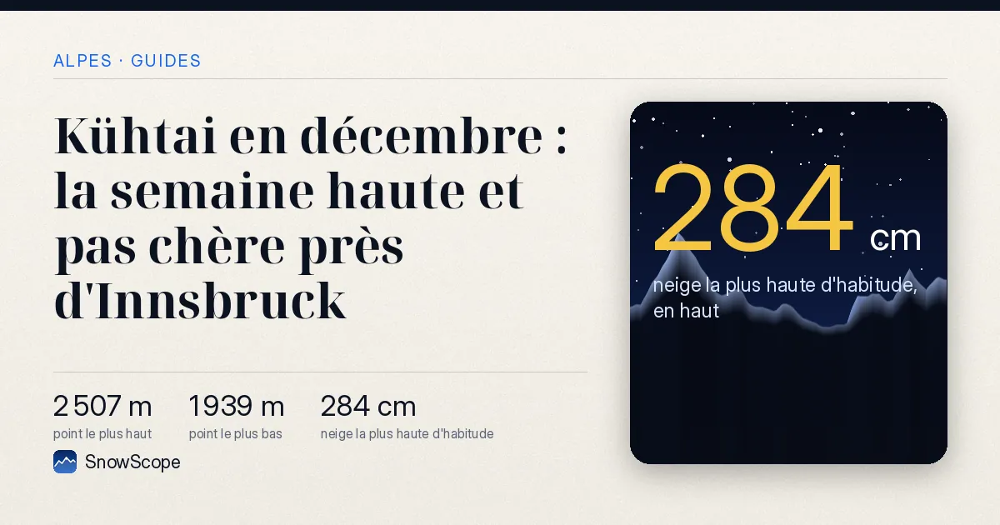

Kühtai en décembre : la semaine haute et pas chère près d'Innsbruck
La remontée la plus basse de Kühtai est à 1939 m, plus haut que le sommet de bien des stations autrichiennes. Un 15 décembre typique, nos 46 hivers d'historique donnent 60 cm à cette altitude, et la basse saison officielle va du 27 novembre au 18 décembre, avec un forfait journée à 50,50 EUR.
Consultez les prévisions neige en temps réel pour Kühtai sur l'application SnowScopeHauteurs de neige, alertes poudreuse et carte 3D, gratuitement.
Du bas au sommet
La neige, c'est de l'eau stockée sur la pente : plus on monte, moins elle fond ou tombe en pluie. Kühtai l'illustre bien. En bas (1939 m), un 15 décembre typique compte 60 cm, à mi-pente (2223 m) 72 cm et au sommet (2507 m) 112 cm.
Même les années maigres ne sont pas nues ici. Un hiver sur 10, le 15 décembre n'a que 27 cm en bas et 34 cm à mi-pente, mais dans aucun de nos 46 hivers le bas n'était sans neige ce jour-là. Le domaine cartographié est petit, 34 km de pistes et 13 remontées, mais tout est en altitude.


Les semaines qui marchent
En bas, la part des hivers avec 30 cm ou plus passe de 70 % du 1er au 7 décembre à 85 % du 8 au 14, puis 93 % et 96 % les deux semaines avant le Nouvel An. À mi-pente, c'est déjà 89 % la première semaine.
À Kühtai, on peut donc réserver début décembre avec plus de confiance que presque partout hors glacier. Le premier jour habituel avec 30 cm en bas est le 12 novembre.
Avant et maintenant
Kühtai n'échappe pas au réchauffement, mais perd moins que les stations plus basses. La moyenne de décembre en bas est passée de 53 cm sur les 15 premiers hivers à 49 cm sur les 15 derniers ; au sommet elle est restée stable (103 et 104 cm). La semaine de Noël, 87 % des 15 derniers hivers avaient encore 30 cm en bas.
L'hiver dernier était faible : 36 cm en bas le 15 décembre. Faible, ici, reste skiable.
Le budget
La grille officielle 2026-27 est claire. En basse saison (27 novembre au 18 décembre), le forfait journée adulte coûte 50,50 EUR et le 6 jours 269 EUR, valable à Kühtai et Hochoetz. À partir du 19 décembre, les prix de haute saison sont de 66,50 EUR et 353 EUR.
Dès le 4 décembre, les forfaits de 2 jours et plus valent pour tout le secteur Kühtai-Hochoetz : une semaine avant Noël vous offre un second domaine au même prix.
Comparé au glacier du Stubai
Le glacier du Stubai, l'autre option haute de décembre près d'Innsbruck, est plus enneigé au sommet : 169 cm un 15 décembre typique à 3208 m, contre 112 cm à Kühtai. Mais sa remontée la plus basse (1692 m) est plus basse et plus maigre : 40 cm et 72 % des hivers avec 30 cm la semaine du 15 au 21 décembre.
Son forfait journée de haute saison coûte 75,50 EUR et le 6 jours 355 EUR. Pour une semaine de décembre avant le 19, les 269 EUR de Kühtai font la plus petite facture.
Conseils aux skieurs
- Réservez une semaine qui se termine au plus tard le 18 décembre pour le tarif basse saison (269 EUR les 6 jours au lieu de 353 EUR).
- Profitez du forfait régional pour skier une journée à Hochoetz quand le vent balaie les pentes ouvertes de Kühtai.
- Kühtai est un village de col : pneus hiver et chaînes après une chute de neige.
- Avant de quitter la piste, lisez le bulletin d'avalanches du Tyrol (avalanche.report).
Autres cartes (sites externes)
Références et crédits
- Kühtai: official lift-pass prices (2026-27), checked 13 November 2026 www.kuehtai.info/service/service/preise-wintersaison-2026-2027.html
- Stubaier Gletscher: official lift-pass prices (2026-27), checked 13 November 2026 www.stubaier-gletscher.com/en/ski-area/prices/
À propos de ces chiffres
Chiffres de neige : historique SnowScope, 46 hivers passés (1980-81 à 2025-26) aux altitudes de la station, corrigé de l'altitude (une estimation pour une zone, pas les bulletins de la station) ; « bonne neige » = 30 cm ou plus au sol en moyenne sur la semaine. Carte : notre hauteur habituelle au 15 décembre répartie sur le relief selon l'altitude. Pistes et remontées : cartographie OpenSkiMap. Forfaits : grilles officielles des stations, vérifiées le 13 novembre 2026 ; les prix peuvent changer.
Bulletins d'avalanche officiels: Avalanche.report – Euregio Tyrol
Citer ce bulletin
Pour la recherche, l'enseignement ou la presse : chiffres et graphiques réutilisables librement sous CC BY 4.0 avec cette citation.
SnowScope (2026), Kühtai en décembre : la semaine haute et pas chère près d'Innsbruck, https://snowscope.app/blog/fr/2026/11/kuehtai-december-ski-trip-highest-village-innsbruck-budget.html, consulté le 2026-11-14
SnowScope (Atlas Labs). (2026, November 14). Kühtai en décembre : la semaine haute et pas chère près d'Innsbruck. SnowScope snow reports. https://snowscope.app/blog/fr/2026/11/kuehtai-december-ski-trip-highest-village-innsbruck-budget.html
BibTeX
@misc{snowscope2026kuehtaidecemberskitriphi,
author = {{SnowScope (Atlas Labs)}},
title = {Kühtai en décembre : la semaine haute et pas chère près d'Innsbruck},
year = {2026},
month = nov,
howpublished = {\url{https://snowscope.app/blog/fr/2026/11/kuehtai-december-ski-trip-highest-village-innsbruck-budget.html}},
note = {Published 2026-11-14 13:29 UTC; accessed 2026-11-14}
}· CC BY 4.0 · Méthodes, données et outils →
Kühtai : neige et température selon l'altitude, cet hiver vs l'hiver dernier (outils) →
Suivre Kühtai
Gratuit : un message quand la neige arrive, et la météo chaque matin.
Autres bulletins neige

Un séjour de 3 jours pas cher au lac de Côme en décembre, avec les vrais prix 2026-27 : trains, bateaux, funiculaire et ski à Piani di Bobbio ou Madesimo, l'économie par rapport à Cortina et les chances de neige à Noël.

Les hauteurs de neige en Alpes sont en retrait par rapport à la normale en début novembre, avec seulement 55 cm dans les meilleures stations au 3 novembre.